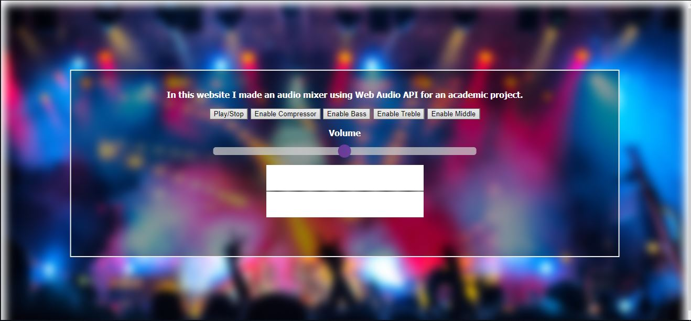

-
LiveBusMaps
This Project is based on Publish/Subscribe system and was created in terms of course Distributed Systems in the 6th semester of Departement of Computer Science @ AUEB.
Publish/Subscribe System is a messaging pattern where senders of messages, called publishers, do not program the messages to be sent directly to specific receivers, called subscribers, but instead categorize published messages into classes without knowledge of which subscribers.
In fact, in this system, publishers connect with brokers which forward the message to the subscriber that want to take the message. Subscribers express interest in one or more classes and only receive messages that are of interest, without knowledge of which publishers, if any, there are.
In this project, We want to gather the real-time bus location information. We don't have real-time data ,so publishers have to read a txt file named "busLinesNew" which is located in DS_project_dataset folder and has location data from greek buses. Brokers distribute the topics (bus lines) according to their hashed number. Also,an Android application has been made for Subscribers.
-
ReversiGame
This Project was created in terms of course Artificial Intelligence in the 5th semester of Departement of Computer Science.
It's a simple game written in Java using the Min-Max Algorithm.
Min-Max algorithm is a decision rule used in artificial intelligence, decision theory, game theory, statistics, and philosophy for minimizing the possible loss for a worst case (maximum loss) scenario. When dealing with gains, it is referred to as "maximin"—to maximize the minimum gain.
A simple example of playing is below:

-
Audio Mixer
This Project was created in terms of course Multimedia Technology in the 7th semester of Departement of Computer Science.
Web Audio API is the main technology that the website uses. By pushing the Play/Stop Button, a song("Roxanne/The police") is loaded and you can add 4 filters on it.
The 1st filter is the Dynamic Compressor which has many attributes that you can edit.
You can learn about the attributes from the website of WebAudioAPI
The other filters that you can enable is bass,treble and middle.
